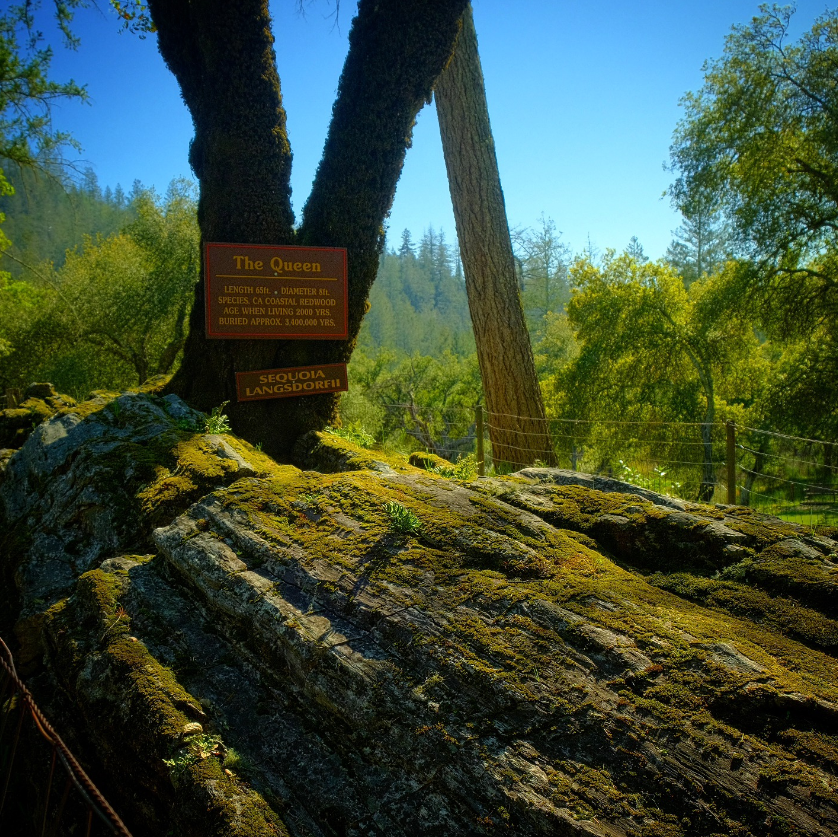

"The Queen" is a silent witness to a cataclysm that occurred 3.4 million years ago. Once a soaring Coastal Redwood, this titan was toppled by a massive volcanic eruption and entombed in ash. Today, draped in a living carpet of moss, the fossilized giant bridges the Pliocene epoch and the modern California woodland.